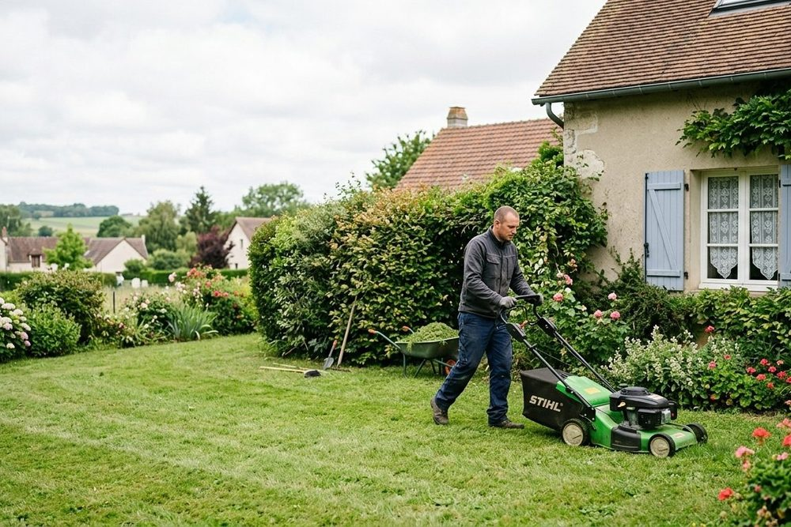

01
Création de jardins
Massifs, pelouses et allées : l'aménagement se pense selon votre terrain.
En savoir plus →
Paysagiste à Andrésy (78)
Luc Chauvet aménage et entretient vos jardins à Andrésy et aux alentours.
Nos prestations
Du projet de jardin à son entretien régulier.
Massifs, pelouses et allées : l'aménagement se pense selon votre terrain.
En savoir plus →
Aussi : Plantations Engazonnement Taille de haies

À propos
Luc Chauvet est paysagiste, installé à Andrésy, dans les Yvelines.
Contactez-le pour parler de votre jardin et demander un devis.
Contact
Appelez ou écrivez-nous pour décrire votre projet et demander un devis.
© Luc Chauvet · Maquette de démonstration